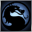

Mortal Kombat: Arcade KollectionDetalles
 |
|
| Tiempo de juego | 4m 3s |
| Última actividad | 11/11/2025 9:00:02 |
| Añadido | 31/5/2025 1:25:31 |
| Modificado | 10/12/2025 11:28:28 |
| Estado de finalización | Jugado |
| Librería | Playnite |
| Fuente | |
| Plataforma | PC (Windows) |
| Fecha de lanzamiento | 30/8/2011 |
| Puntuación de la Comunidad | 70 |
| Puntuación de la Crítica | 54 |
| Puntuación de usuario | |
| Género | Arcade Fighting |
| Desarrollador | Other Ocean Interactive |
| Editor | WB Games |
| Característica | Multiplayer Single Player |
| Enlaces | Wikipedia |
| Tag | |
Descripción
GET OVER HERE! Si esa frase no te transporta a un salón de fichines oscuro, con el piso pegajoso y un pibe al lado tuyo gritándote los combos, te falta historia gamer. Esta colección no es un rejunte de juegos de pelea, es la trilogía sagrada que redefinió la violencia en los videojuegos y nos vació los bolsillos ficha por ficha.
Este pack te trae la santísima trinidad de la saga en 2D, la que importa de verdad. Empezás con el Mortal Kombat 1, el que lo empezó todo, un poco más tosco pero con la mística intacta. Seguís con el Mortal Kombat 2, para muchos la secuela perfecta que lo mejoró en absolutamente todo: más rápido, más oscuro y con más formas de humillar a tu rival (Friendships, Babalities). Y rematás con el Ultimate Mortal Kombat 3, la locura total, con el botón para correr, combos demenciales y todos los ninjas de colores que podías pedir.
Pero la magia de MK también estaba en los secretos. El código de sangre en la versión de consola, cómo desbloquear a los personajes ocultos, los tesoros del ?-Kombate... El juego te obligaba a hablar con otros, a compartir data, a crear una comunidad alrededor de la máquina. Era nuestro "lore" antes de que supiéramos qué carajo era el lore.
Es un pedazo de historia jugable. La génesis de una de las franquicias más importantes de la historia. Pura nostalgia, reflejos y la satisfacción inmortal de escuchar "FINISH HIM!" y arrancarle la columna vertebral a tu mejor amigo. Un indispensable en toda regla.